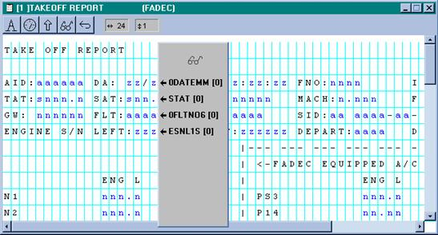

OVERVIEW
Reports are a collection of parameter values captured at critical or significant points of time during a flight or on the ground. Trigger Definitions enable the application developer to specify the conditions under which a report is to be generated. Report Definition allows the developer to specify WHAT parameters are to be captured, WHEN, for HOW LONG and, HOW they should be formatted.
Once generated, reports are retained in the airborne unit for distribution to one or more of the on-board peripheral devices such as Printer, Display, ACARS (for transmission to the ground), Recorder, PCMCIA, or Loader. The specification of which device(s) the report is sent to, in what format, and under what circumstances, is also part of the report definition process.
Reports, once generated, are saved in the non-volatile memory of the ACMS and thus are not lost with power shutdowns. However, since non-volatile memory capacity is limited, it is necessary to specify, at the report definition time, how many copies of a report are to be retained, for how long, and which copies are to be discarded when the limit is reached.
Figure 6.1: Main Menu and Toolbar with Define Report
selected.
Report definition is usually done in conjunction with the report trigger definition, but after the parameters needed for the reports are defined. Report definition starts by selecting the Reports option from the Define menu, or pressing the Define Report button on the toolbar (see Figure 6.1).
Once the report selection is made, a list of all previously defined reports appears (see Figure 6.2). Next to this list are a set of buttons that allow the developer to:
define  reports,
reports,
 existing report definitions for inspection and
modification,
existing report definitions for inspection and
modification,
 one report definition into another,
one report definition into another,
 a report definition,
a report definition,
a single or a group of report definitions based on fields contained,
and
protect a report from being modified.
Figure 6.2: Report Selection Window.
Following are the explanation of each of the report definition buttons of Figure 6.2:
 - This selection asks for a Report Name and a Report ID Number (see Figure 6.3). The
Report Name can be up to ten characters long.
The Report ID Number must be unique and three digits long. Once the
Report Name and ID Number are entered the application developer should
- This selection asks for a Report Name and a Report ID Number (see Figure 6.3). The
Report Name can be up to ten characters long.
The Report ID Number must be unique and three digits long. Once the
Report Name and ID Number are entered the application developer should  the definition and proceed with the definition
of the report, as described later in this chapter.
the definition and proceed with the definition
of the report, as described later in this chapter.
Figure 6.3: Report Name and ID Window.
 - To open a report definition for modification, it must
be selected from the list of pre-defined reports in the system and opened (see
Figure 6.2). Once the report definition is opened, its attributes can be
modified as described later in this chapter.
- To open a report definition for modification, it must
be selected from the list of pre-defined reports in the system and opened (see
Figure 6.2). Once the report definition is opened, its attributes can be
modified as described later in this chapter.
The list of report names can be sorted in ascending (or descending) order using the title bar at the top of the list (as described in the Introduction), or scrolled up or down in search of a known report definition. If the report name or ID number is not known, the function (described below) can be used to search for a report definition satisfying certain conditions or attributes.
 - This function creates a new report
definition, while copying information from an existing definition. To copy
a report definition, first select the existing report from the report selection
window (see Figure 6.2), next select the
- This function creates a new report
definition, while copying information from an existing definition. To copy
a report definition, first select the existing report from the report selection
window (see Figure 6.2), next select the  option and enter the new report name when
prompted. The system will create a new report definition with the specified
name and the next available ID Number. All other fields are copied from the
original report. The fields in the new report can now be modified as desired.
option and enter the new report name when
prompted. The system will create a new report definition with the specified
name and the next available ID Number. All other fields are copied from the
original report. The fields in the new report can now be modified as desired.
 - To delete a report definition, select the report, press
the
- To delete a report definition, select the report, press
the  button and confirm the deletion.
button and confirm the deletion.
- This function searches for one or more report definition(s) satisfying a set of criteria. To start the search, click the button in the Report Selection window (see Figure 6.2). In return, the system opens a Report Search window (see Figure 6.4), asking for the specification of the search criteria. Fill in the form with the desired search attributes and click the Find button in the Report Search window. The system will return a list of zero or more report definitions satisfying the specified attributes.

Figure 6.4: Report Search Window.
If a user has Manufacturer Access, then a report can be
protected from modification or deletion.
REPORT DEFINITION FORM
Once a report is  ed, a window with eight
tabbed cards (General, Routing, Formatting, Collection, Retention, Downlinks,
Components, and Transcription) is presented to the developer (see Figure
6.5). In what follows and for each tab
card, the nature and format of values to be entered and attributes to be
specified are discussed.
ed, a window with eight
tabbed cards (General, Routing, Formatting, Collection, Retention, Downlinks,
Components, and Transcription) is presented to the developer (see Figure
6.5). In what follows and for each tab
card, the nature and format of values to be entered and attributes to be
specified are discussed.
Figure 6.5: Report Specification Window (General Tab Shown).
GENERAL TAB
Under this tab the general characteristics of the report are defined (see Figure 6.5). These characteristics are:
Type
All reports of an application are of type
Report ID
This ID is entered during the report creation and cannot be modified here.
Report Name
The name can be modified here.
Group Number
In some cases, where groups of reports are to be manipulated, e.g. displayed, routed etc., the system allows the developer to specify subsets of all defined reports. The subsets are defined by assigning group numbers to particular reports. For example, all engine reports might be in a one group, whereas position and weather reports might be in a five, and the APU reports might be in a three. By entering a group number between 1 and 99, a report can be made a member of that group.
Supergroups
Some applications use the group number to select only the top-level report IDs of merged reports for the Report Directory display. This makes it necessary to put all merged reports under one group. Now the application can give different group numbers to merged reports, and still create a Report Directory, which lists only the merged report IDs. The call to the Report Directory function uses a supergroup number where, normally, the ordinary group number argument is (See the display line select key commands in the chapter on Screens). All reports belonging to groups designated as members of the supergroup will be selected.
Supergroups are created at run time, rather than when the report specification is made using the AGS IV. The mechanism is a series of three AMTAL CALL statements, which are put into reserved trigger _INISERV. The three CALLS are:
call CREATE_SUPER_GROUP with < super group >, < title >
call JOIN_SUPER_GROUP with < super group >, < group >
call QUIT_SUPER_GROUP with < super group >, < group >
The arguments are integer values for super groups and groups, plus a title for the super group. The range for groups is 1 through 99 and for supergroups 100 through 255.
CREATE_SUPER_GROUP is called once for each super group in _INISERV. The title must be 16 characters or less, and it overwrites the string LAST FLIGHT or ALL FLIGHTS on line 1 of the Report Directory screen when the supergroup is listed.
JOIN_SUPER_GROUP is called once for each group in a super group. If the group argument is zero, all groups are included in the supergroup. This is equivalent to a report group of zero, but is useful when used with QUIT_SUPER_GROUP.
QUIT_SUPER_GROUP excludes the group indicated from the supergroup. Normally this will be a supergroup already defined to include all groups.
Loader Download with Supergroups
The Loader download function uses groups and supergroups in the same way as the Report Directory function. The call to the function has an optional argument to designate a flight filter and a group filter just as with the other function call. The erase flag has no meaning for the Download function, except those files that have been hidden by exercising the ERASE option on the Report Redirection screen are also hidden from the Loader Download function.
The arguments for the adl_dnld command, requesting the download function are:
<flight filter >,< group filter >
where the arguments have the same meaning as above.
ROUTING TAB
The destinations to which a report may be sent are specified in this tab page (see Figure 6.6). For each destination, one should specify whether the report is to be sent Automatically or Manually, and whether the report is to be Formatted. The supported devices are the flight deck Printer and Display, ground transmission through ACARS, the data Loader (ADL or PDL), or the message data file of the Recorder (OQAR or QAR). As the integrated optical disk or the PCMCIA recorders are treated as recorders, no separate entries are necessary for these devices. In Figure 6.6, the TAKE OFF Report is to be sent to ACARS automatically and manually without format; to the Printer manually and formatted; and nowhere else.
Figure 6.6: Report Specification Window (Routing Tab Shown).
Automatic
Automatic routing has a slightly different meaning for different destination devices. For printer and ACARS the report is sent as soon as the devices are ready to accept the report. For the data loader and integrated disk, the report will be sent when the group download of reports is initiated either from the display device or from a trigger. And for the display device automatic has no meaning and should not be specified.
Manual
Manual routing does not cause any action when the report is triggered; it only sets the permission for the report to be sent to a device. The waiting reports are routed either from the flight deck display device, or through an ACARS uplink, or in response to a trigger command.
Manual and Automatic are NOT mutually exclusive. The following cases are intended to better explain the possible situations:
· If neither Manual nor Automatic are checked, the report will never go to that device.
· If only Auto is checked, the report will go to the device on activation; there will be no way of sending it again.
· If only Manual is checked, the report will remain in the system (ISD) with the capability of being routed to the device either from the display unit or a trigger, or ACARS uplink command from the ground. Uplink commands can route reports only back to the ground.
· If both Auto and Manual are checked then:
1- the report will go to the device on activation,
2- the report will remain in the system internal storage device with the capability of being routed to the device either from the display unit, or a trigger, or ACARS uplink command from the ground.
The report will remain in the ISD until one of the retention criteria, discussed later in this chapter, cause it to be deleted (i.e. too many reports in the system, too many reports in this flight leg or simply too many flight legs).
The following demonstrates two cases where it is advantageous to route reports using a trigger.
· An overweight landing report may need to be routed to the printer 2 minutes after touchdown.
· A lengthy maintenance report may need to be routed to ACARS only if the destination of the flight is the home base of the airline and estimated time of arrival is 30 minutes.
Manual routing, of course, can happen only while the report is in the ISD, i.e. it has not been deleted due to many copies or expiration.
Formatted
Reports stored in the ISD are in ASCII format and do not contain titles, headers, new line characters or field separation (delimiters) between the values. Reports can still be sent to devices in this state (not formatted) if the report is to be later formatted by another ground based program. On the other hand, if the report is to be printed, displayed in the flight deck, or is to be transferred to the ground (and viewed without additional formatting on the ground), then the report should be sent as Formatted. In this case, the formatting is done by the ACMS, based on the hardcopy format specified by the developer, as discussed later in this chapter.
COLLECTION TAB
This is where the parameter values that are to appear in the report are specified. Parameters of a report are separated into collection groups. Parameters that are to be collected with the same timing requirements are placed in the same group. If, for example, a few parameters are to be captured at the report triggering time, some are to be captured 5 seconds after the report is triggered, and others are to be captured, starting 3 seconds before the report is triggered, once per second, for 20 seconds, then at least three collection groups are needed. Note that because of history buffers, values of parameters prior to a triggering event can also be collected in a report.
Sometimes collection groups are defined with similar timing requirements, just to put the parameters in some logical grouping. For example, if all reports have a similar beginning (header) with the time, date, aircraft tail number and altitude, all these parameters will be defined to be one snapshot collection group. Other report-specific snapshot parameters will be called out in another snapshot collection group.
Figure 6.7 shows the window opened in response to selecting the Collection tab. In this window, the values shown are typical and belong to TAKE OFF Report (also a typical report). The top four keys in this tab page allow the Editing, Addition, Deletion, and Copying of collection Groups. The bottom four keys allow Editing, Insertion, Addition, and Deletion of parameters in the group.
Figure 6.7: Report Specification Window (Collection Tab Shown).
To add a new group, click the Add Group button. In response, the system opens a dialogue box and asks for the Collection Group Name and Collection Type (see Figure 6.8). For compatibility with trigger logic, the Collection Group Names must be chosen as consecutive numeric values, starting at zero.
Figure 6.8: The collection group name and type specification window.
Depending on the Collection Type selection made the Define Collection Group window may expand and ask for additional information about the group. Following is a discussion of these additional parameters and the meaning of each selection:
· Snapshot This collection type captures one sample of each parameter in the group. The developer selects the time of the snapshot relative (before or after) to the report activation time and enters it in the form (see Figure 6.9). The Snapshot example in Figure 6.9 specifies the data to be collected 10 seconds before the report activation time.
Figure 6.9: Collection Group Definition Window (Snapshot Type Shown).
· Time Series This collection captures multiple samples of each parameter in the group, starting a number of seconds before or after the report activation (triggering), for a specified period (in seconds). The number of seconds from activation must be entered in the form (see Figure 6.10). An entry of zero means at activation time. The duration and the capture period must also be entered in the form. For example the Time Series in Figure 6.10 specifies the data to be collected 10 seconds before the activation, continued for 6 seconds, and sampled every other second, for a total of 3 samples.
Figure 6.10: Collection Group Definition Window (Time Series Type
Shown).
· Time Set This collection type captures samples of each parameter in the group, starting a number of times before or after the specified triggering time. These times must be entered in the form (see Figure 6.11). An entry of zero means at activation time. For example, the Time Set in Figure 6.11, by specifying the values 3, and 17, will cause the parameters in the collection group to be captured once 17 seconds before activation, and once 3 seconds after activation.
Figure 6.11: Collection Group Definition Window (Time Set Type Shown).
· Request time this collection group type is similar to snapshot with a value of zero, but with a minor difference. All collection groups except for Request time and Triggered are collected after all the triggers have been executed, and all calculations are done. This causes the final calculated values to be captured in reports. However, this causes a problem if a calculated parameter is to be included in a report, recalculated during the same second and included in another report. As an example, assume a parameter REPCOUNT is to be incremented every time an engine exceedance report is generated, and furthermore this parameter is to be included in the report. The problem here is that if two reports are generated in one second, and both are collected at the end of the second, then both will capture the REPCOUNT parameter after it has been incremented twice. The Request time collection group solves this problem, by collecting the data at the moment the report is activated, not at the end of the second, thus the trigger that activates the report the first time will increment the REPCOUNT and the report will capture the value, the second time, REPCOUNT will be incremented again, the report will be activated and the second value will be captured in the report.
· Triggered these collection groups are not collected based on time, but rather on commands from user specified triggers. For example, if on takeoff values are to be captured at every 100 feet rather than every second, then a triggered collection group is needed. Here a standard trigger would activate the report on the ground, another trigger would cause the report collection every time an altitude change of 100 feet was detected. For triggered collection groups, the user must enter the number of times the collection is expected to be triggered, in the Allow X snapshots in this report section, where X is the number of times the collection is expected to be triggered.
· Triggered Time Series (iDMU only) these collection groups are a combination of Time Series and Triggered groups. The group is collected based on a command from a user specified trigger in a time series manner. Time increments are specified as in a Time Series group (see figure 6.11a). If there are more than one triggered time series collection groups defined, and they contain identical parameters with identical formats, then the Overlay Previous Group option can be chosen, not on the first group, but on any subsequent group. This function is particularly useful if you have, for example, TCAS parameters that need to be collected during a particular intrusion event, but there is no way to know which intruder number caused the event. Only one set of parameters will be listed in the report hardcopy, but any intruders data can overlay this set.

Figure 6.11a:
Collection Group Definition Window (Triggered Time Series Type Shown).
To Edit a group, the group should be selected, and the Edit Group button should be pressed. In response, depending on the type of the selected group, dialog boxes similar to those of Figures 6.8-6.11 will be opened. In each case, the developer may change any parameter causing the collection type to change.
To Delete a group, the group should be selected, the Delete Group button pressed and the deletion confirmed. Note that in this case in addition to the collection group, all parameters in the group will also be deleted.
To Copy a group, the group should be selected and the Copy Group button should be pressed. The Collect Group Name should be specified (must be a number) and the report that the group will be copied to must be specified (can be the report that is currently open).
Parameter Operations
As stated before, data to be captured in a collection group are the parameters. Once a collection group is defined, parameters may be edited, inserted, added, or deleted.
· Edit Parameter Selecting a parameter and pressing the Edit Parameter button, brings up a form that allows the developer to select a parameter name for the parameter, override the format (length) of the digits to be captured and specify the age index of the parameter. For parameters that are acquired once per second, the age index is normally zero, as the collection timing is specified by the collection criteria. This parameter is needed for parameters that are acquired more than once per second, as many copies of the same parameter will have to be specified in the same collection group. As an example if a parameter is acquired 8 times a second and all samples are to be captured in a report for 5 seconds (40 samples total), then the collection group will be defined as a time series for five seconds and each sample of the parameter in the second will appear as a separate parameter in the group with age indices of zero, one, two and seven.
· Insert Parameter This button allows the insertion of a parameter in the collection group before the selected field position in the window. Values to be entered in the form are similar to the Edit Parameter case.
· Add Parameter This is similar to the Insert Parameter, described above, except that the filed is added to the end of the collection group.
· Delete Parameter This allows for the removal of a parameter from a collection group.
FORMATTING TAB
This is where one or more hardcopy formats are specified for the report. The ACMS uses such formatting templates for routing the formatted versions of a report to different devices. If only one format is specified, all devices will share the same format. It is also possible to specify one format per device, or even multiple formats for a single device. The determination of which format to use is based on the following rules:
· If the report is NOT specified as formatted in the routing screen (see Figure 6.6), then no format is used.
· If the report is routed to the printer, either automatically or through the menus of the display device, then a format definition with a P0 extension is expected and used.
· If the report is routed to the loader, recorder (internal or external), ACARS, display or integrated disk, either automatically or through the menus of the display device, then a format definition with a L0, R0, A0, or I0 extension is expected and used respectively. If one does not exist then the format with the P0 extension will be used.
· If a report is routed to any device by a trigger, an alternate format with a two-character extension can be specified. The format with the extension must, of course, exist.
Figure 6.12: Report Specification Window (Formatting Tab Shown).
Once the Formatting tab page is selected, a list of all previously defined formats for this report appears (see Figure 6.12). Next to this list are a set of buttons that allow the developer to:
Design  hardcopy formats,
hardcopy formats,
 existing hardcopy
formats for inspection or modification,
existing hardcopy
formats for inspection or modification,
 one hardcopy format
into another,
one hardcopy format
into another,
 a hardcopy format, or
a hardcopy format, or
change the of an existing hardcopy format (format name, extension, and width).
Following are the explanation of the report design buttons shown in Figure 6.12:
 - This selection first asks for a hardcopy format
name, a hardcopy format extension, and the width of the page (see Figure 6.13).
The format name, called Hard Copy Name can be the same as the report name or
might be indicative of what the format is to be used for.
- This selection first asks for a hardcopy format
name, a hardcopy format extension, and the width of the page (see Figure 6.13).
The format name, called Hard Copy Name can be the same as the report name or
might be indicative of what the format is to be used for.
The report width should be selected considering the capabilities of the device as well as the requirements of the report.
The extension should be selected as
described above. Once the information on this form is completed and  ed, the system opens a blank form of specified
width for selection and positioning of parameter values. A typical version of such design forms is
shown in Figure 6.14. Later in this
chapter we discuss the specification and editing of parameter values that
should appear in such forms.
ed, the system opens a blank form of specified
width for selection and positioning of parameter values. A typical version of such design forms is
shown in Figure 6.14. Later in this
chapter we discuss the specification and editing of parameter values that
should appear in such forms.
Figure 6.13: Report Hardcopy Format Specification Window.
.
 - To open a hardcopy
format for inspection or modification, select the hardcopy format name from the
list of pre-designed hardcopy formats (see Figure 6.12). Once the hardcopy
format is opened, a hardcopy format design editor form similar to that of
Figure 6.14 is opened. At this point
the layout may be inspected or modified.
- To open a hardcopy
format for inspection or modification, select the hardcopy format name from the
list of pre-designed hardcopy formats (see Figure 6.12). Once the hardcopy
format is opened, a hardcopy format design editor form similar to that of
Figure 6.14 is opened. At this point
the layout may be inspected or modified.
 - This function creates a new hardcopy format,
while copying information from an existing format. First select the existing
hardcopy format. Next, click
- This function creates a new hardcopy format,
while copying information from an existing format. First select the existing
hardcopy format. Next, click  and enter the new hardcopy format name when
prompted. The definition of the new hardcopy format can be modified as desired.
and enter the new hardcopy format name when
prompted. The definition of the new hardcopy format can be modified as desired.
 - To delete a hardcopy format, select the format, click
the
- To delete a hardcopy format, select the format, click
the  button and confirm the deletion.
button and confirm the deletion.
- In response to this selection, a window similar to that of Figure 6.13 is opened. This allows the developer to change the hardcopy format name, the extension, or the width of the report.
Format Design Form
Once the  or
or  option is selected, a hardcopy format design
editor window opens (see Figure 6.14).
The purpose of this window is to enable the application developer to
design the layout of parameter values that appear in the report. Through this window, using its own toolbar,
the AGS application developer is able to:
option is selected, a hardcopy format design
editor window opens (see Figure 6.14).
The purpose of this window is to enable the application developer to
design the layout of parameter values that appear in the report. Through this window, using its own toolbar,
the AGS application developer is able to:
· compose and position fixed (background) text on the format design page, and
· specify the position of the parameter values that have been captured for the report.
A typical Take Off report hardcopy format is shown in Figure 6.14.
Figure 6.14: Hardcopy Format Design Editor Window.
Format Design Toolbar
The items on the format design toolbar are:
· text selection button ,
· parameter insertion button ,
· select button ,
· field inspection button ,
· repeat group button ,
· filter button and
· two position indicators , indicating the column and line position of the cursor on the format layout.
In what follows, we discuss the function of each of these toolbar buttons and their use in the design of format layouts. Specified functions apply to both the design of new formats or modification of pre-designed formats.
Background Text
Formats usually have a background text. Examples of such
text are report titles, explanations, and column headers. The desired text is
positioned in the format layout after selecting the text selection button and positioning and clicking
the cursor on the starting position of the text. This is followed by the usual
typing of the text. In this mode, right-clicking on the mouse anywhere in the
hard copy will create a menu of : cut line, copy line, paste line, insert
line enabling the user to copy whole lines, insert new ones, cut or paste them.
Parameter Value Selection
This option is used to position the parameter values captured in the report. To do this, select the button. In response, the AGS IV system returns a cursor. Position and click the cursor on the leftmost position of the field in which the parameter value should appear. In response to this clicking, the system opens a window with a list of defined parameters in the first collection group of the report (see Figure 6.15). First re-select the collection group if needed, then locate and select the name of the parameter with the appropriate Age Index.
The Collection Sequence is normally set to one, except in cases where the values in the collection group are captured multiple times. This is where the collection group type is Time Series, or Time Set or Triggered. In such cases the Collection Sequence of 1 indicates the earliest capture, 2 the next capture, and so on.
Figure 6.15: Hardcopy Parameter Definition Window.
In addition to collection groups specified as part of the report collection, the value RealTime can also be specified as a collection group. In this case a list of ALL ACMS parameters appears for selection. Parameters selected in such a way are not captured when the report is activated, but are captured only when the report is formatted.
This capability allows the developer to specify capturing of parameters not only at report triggering time, but also report routing time. As an example a stable cruise report might have time and date as part of the collection group, to indicate when the report was captured, but in addition, it might have time and date as part of a Real- Time group in the hard copy format to indicate when the report was printed.
The system automatically shows the predefined length and the format of the selected parameter. This format field can be overridden, if desired, by typing in a different but compatible format. Supported parameter formats are described in the chapter on Parameters.
To finish the task  must be pressed.
must be pressed.
Field Selection
Once text or parameter fields are positioned and specified on a design format, the developer may want to delete or reposition the information on the form. The field Selection button provides this capability. To do this, select the option from the format design toolbar. In response, the AGS IV system provides a similarly shaped cursor. Use this cursor to enclose the format area to be modified by clicking one corner and dragging and clicking to the opposite corner. Once the area is enclosed, use the cursor to reposition the area (click and drag) or use the delete key on the keyboard to delete the selection.
Field Inspection
When many parameter value fields are defined in a single format design form, it may be difficult to identify one or more of these fields by simply looking at the field definition(s). To overcome this problem the field inspection function is provided. To inspect a parameter field, open the format to be inspected and select the option from its toolbar. In response, the AGS IV system super-imposes a gray rectangular blank area on the format. Use the cursor to reposition this area next to the parameter fields of interest. The AGS IV system will automatically display the parameters in these fields (see Figure 6.16). Selecting another toolbar item deactivates this option.
In Figure 6.16 below, the field inspection window is shown. The super-imposed rectangle displays the name of the adjacent fields.

Figure
6.16: Report Hardcopy Format Editor Window.
Repeat Groups
This capability saves the user from typing in parameter specifications on lines that are similar to one another. Because of the repetitive nature of collection groups many reports have sections where the lines are identical, except for the fact that the values on the lines, although from the same parameters, have been collected at different times (controlled by time series, time set or triggered collection groups).
Instead of repeatedly typing in each line in the format definition, only the first line can be defined and then duplicated using the Repeat Group tool. The tool can be used on lines that consist only of parameters, and no background text.
Once the line is defined the Repeat Group tool can be selected, which in turn makes the repeat cursor available. The cursor can be used to point to the row that is to be repeated. Once the cursor is clicked on the row, a form appears where the developer has to specify the following values:
· Number of repetitions or rows
· Collection Spacing. This is normally set to one, but can be used to jump over some collected values. For example if a collection group is defined to collect 15 times, by setting this value to 2, every other collected group will be included in the hardcopy.
Filtering
Filtering
allows the user to assign a delta to a parameter in the report hard copy. This delta will be checked against a previous
value of the same parameter. If the
previous value differs from the next value by more than the delta, the entire
line in the hard copy will be included in the final report. If the value differs by less than the delta,
that line will not be included in the final report and subsequent lines will be
shifted up to replace the deleted line.
The
first two characters on the line must be an alpha-numeric identifier (in hard
text), from A1 to Z0, or 1A to 0Z. For
example:
EGT N1 TAT
N1 nnn.n nnn.n snnn.n
N2 ALT MN
Z1 nnn.n snnnn n.nnnn
N2 nnn.n nnn.n snnn.n
Z2 nnn.n snnnn n.nnnn
N3 nnn.n nnn.n snnn.n
Z3 nnn.n snnnn n.nnnn
N4 nnn.n nnn.n snnn.n
Z4 nnn.n snnnn n.nnnn
.
.
N9 nnn.n nnn.n snnn.n
Z9 nnn.n snnnn n.nnnn
N0 nnn.n nnn.n snnn.n
Z0 nnn.n snnnn n.nnnn
1N nnn.n nnn.n snnn.n
1Z nnn.n snnnn n.nnnn
2N nnn.n nnn.n snnn.n
2Z nnn.n snnnn n.nnnn
From within the report hard copy, there
is a filtering icon on the format design toolbar. Clicking on it will open a window that will
display the table of filtered parameters within the hardcopy. You can add or delete parameters from this
table. Once Add is chosen, the cursor
will appear as a filter symbol. Clicking
on any parameter in the hardcopy will open another window that will display the
parameter mnemonic, row, column, and length of the parameter in the
hardcopy. There will also be a dropdown
menu entitled filtered delta which will display a list of all parameters in
the database. One of the parameters can
be selected, or a numeric value can be typed.
This will be the value of the filtered delta.
The parameters must belong in a time
series or time set collection group, where in each instance of a parameter, its
value can change over time. In the above
hard copy example, lines N1 and Z1 are in a time series collection group and
separated from line N2 and Z2 by x seconds, and so on. If the filter function is selected, then the
parameter ALT can be selected on line Z2.
The ALT parameter will turn yellow to indicate it has been
selected. The next selected parameter
MUST belong in the same column and have a related row identifier. In this example, the second parameter
selected must be ALT in line Z1. The
delta specified will be the value the parameter (ALT in this example) must
change in order for the next filtered data line to print. For example, after filtering ALT on line Z2,
then Z1, a delta of 1000 is entered. At
report activation time, ALT must change by more than 1000 between interval Z1
and Z2 in order for line Z2 to appear in the hardcopy. If the value of ALT is less than 1000, then
line Z2 will not appear in the hardcopy and the remaining data lines will be
shifted up. The parameter must change by
more than the delta as compared with the last printed value.
EGT N1 TAT
N1 203.2 095.4 -024.5
N2 ALT MN
Z1 101.3 11300 0.543
N2 204.0 095.5 -024.5
Z2 101.4 12400 0.544
N3 204.2 095.6 -024.6
N4 205.1 096.0 -025.0
Z4 102.6 13500 0.543
In the above example, ALT belongs to a
time series collected at 10 second intervals.
At time Z1, ALT was 11,300 feet.
Ten seconds later, ALT was 12,400 feet.
This increase was greater than 1000 feet, so line Z2 was included in the
printout. At time Z3, ALT was 12,600
feet. It did not increase by more than
1000 (based on the previous printed value of 12,400 feet), so that line was not
printed. At time Z4, ALT was 13,500
feet, which was more than 1000 feet difference from the last printed value at
time Z2
RETENTION TAB
Internal Storage Device (ISD) is non-volatile memory storage in the airborne unit that holds the ACMS reports. As the capacity of this memory is limited, it is important to specify, for each report, when the reports should be discarded. The Retention tab allows the user to specify such limits and the action to be taken when the limits are reached (see Figure 6.17).
The first limit the user specifies, is the maximum number of copies of the report to be retained. If this limit (Max Copies Total) is reached then, for every new occurrence (triggering) of this report, the airborne system will automatically delete the first or the last copy based on the status of the Keep First and Keep Last selection buttons.
Figure
6.17: Retention Tab Window.
It is also possible to specify how many copies of a report are to be generated per flight leg. If this limit is reached, for every new occurrence (triggering) of this report, the system will keep the first, or the last, based on the status of the Keep First or Keep Last selection buttons (see Figure 6.5). If Keep First is selected, then the triggered report will be ignored. If Keep Last is selected, then the oldest report of THIS flight leg will be deleted and the new report will be stored.
To better explain this, consider the following scenario. In an application, the value of the Max Copies Total of a report is set to 5, Max Copies per Flight is set to 3, and the Keep First option is selected. During the first leg of a flight, one such report is triggered and saved. This is then followed by a second leg in which three more such reports are triggered and saved (that is four so far). Now, if during the same second leg, a fourth occurrence of the same report is triggered, it will be ignored (it exceeds the Max Copies per Flight of 3 and Keep First option is in effect). Next, should the same aircraft continue with a third leg and should two more reports be triggered (bringing the total to 6), then the one report of the first leg of this flight will be deleted (Max Copies Total of 5 is exceeded). Note that when Max Copies Total is exceeded, the earliest report is deleted, regardless of the setting of Keep First / Keep Last.
Note also that if the maximum number of copies per flight is not to be a criteria, then this value should be set equal to the maximum total number of copies with the Keep Last option.
It is also necessary to set a retention period, in terms of the Number of Flight Legs, for each report. In this case, if a report is not deleted because of the maximum number of held copies, then the report will be deleted after a number of flight legs. This number is usually based on the criticality of the report.
If the number of flight legs is set to one, then the report will be deleted after each flight (leg). If the number of flight legs is set to zero and automatic routing is specified, then the report will be deleted as soon as it has been sent to all the destinations. Consequently, it is of no benefit to set the number of flight legs to zero, if the report has no automatic destinations.
DOWNLINKS TAB
For reports that are to be downlinked through ACARS to the ground, some options may be specified on a per report basis. This is in addition to the options that will be made available for downlinks in general, using the Configure menu.
For each report up to 4 optional addresses can be specified (see Figure 6.18). These are used for the ground routing of the report once it arrives at the airline operations center.

Figure 6.18: The Downlinks Tab window.
For each report an ACARS routing destination must be selected (see Figure 6.18). The options are:
· VHF - for VHF radio transmission
· SATCOM - for satellite transmission
· GROUND - for transmission through VHF if available or Satcom if VHF is not available
· MU for routing to the ACARS Management Unit (MU) for interpretation by the MU
· PRINTER For routing to the printer connected to the MU. This is used only in installations where there is no direct printer connection available to the ACMS.
· OTHER For special applications where a special character is used as the destination.
The fields Message Type and Sublabel allow the user to override the standard definitions of ACMS downlink messages headers, with specialized characters for this report.
Checking the Strip Dots selection causes all decimal points and periods to be stripped from the report before transmission to the ground. This reduces the transmission costs by reducing the number of characters transmitted to the ground. In such cases the receiving ground station must be capable of re-inserting the dots in the report.
Transcription Tab
At times, the user of a report may need to deduce the type of the report from the content (a search string) embedded within the report itself. An example of this situation is the software receiving the report through the downlink activity of ACARS. To communicate this information to the user of the report the transcription tab is used.
Here the Search String Loc is the column location of the Search String within the report. AGS IV requires that all such Search Strings occur as the first line of the report.
Figure 6.19: The Transcription Tab Window
COMPONENTS TAB
This tab page (see Figure 6.19) is used for defining merged reports and is described in the chapter on Merged Reports.
Figure 6.20: The Components Tab Window